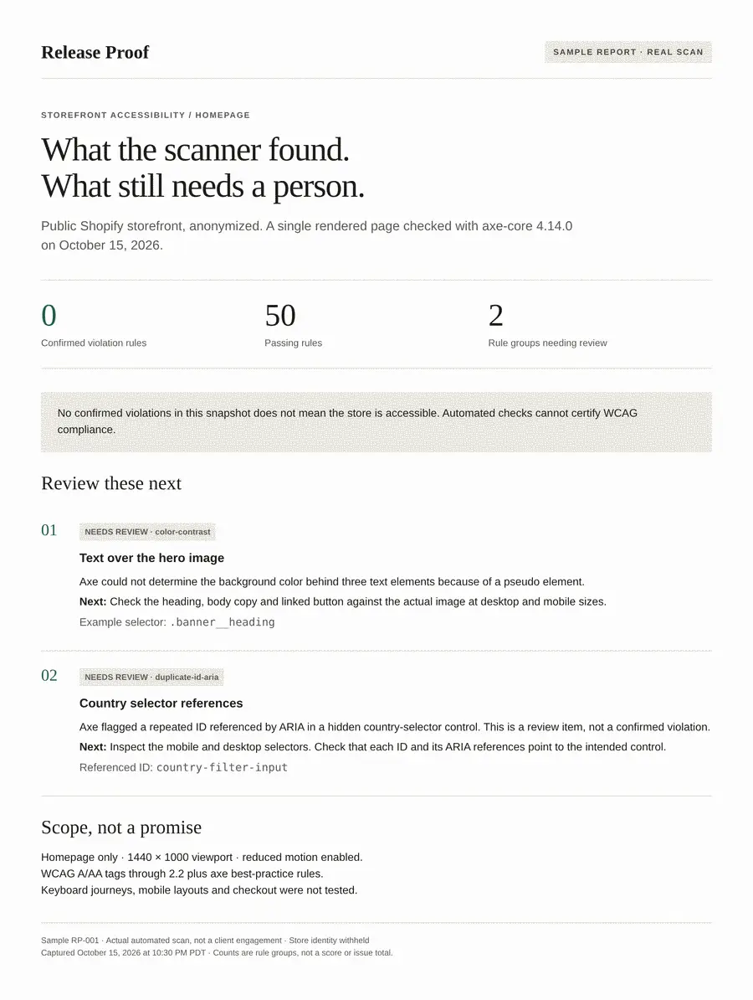
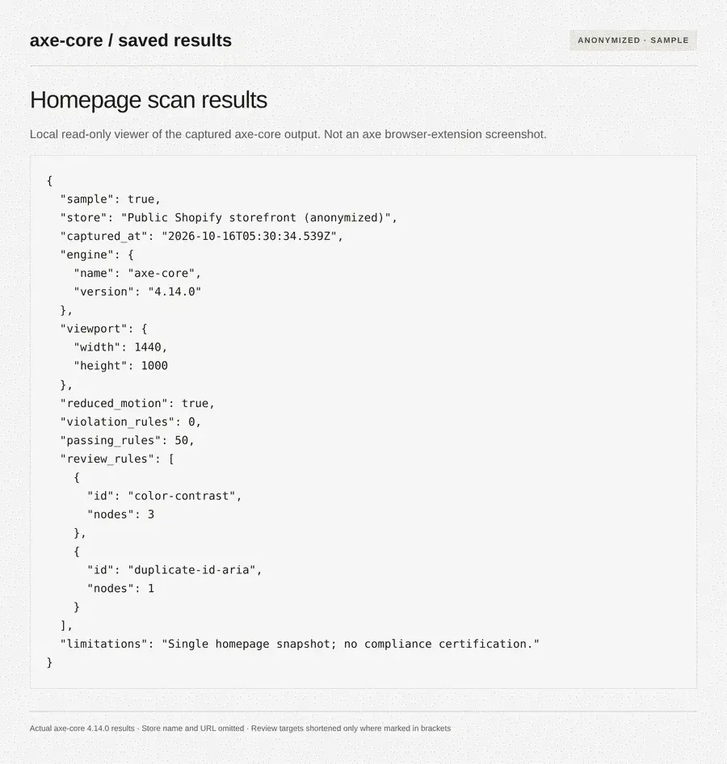
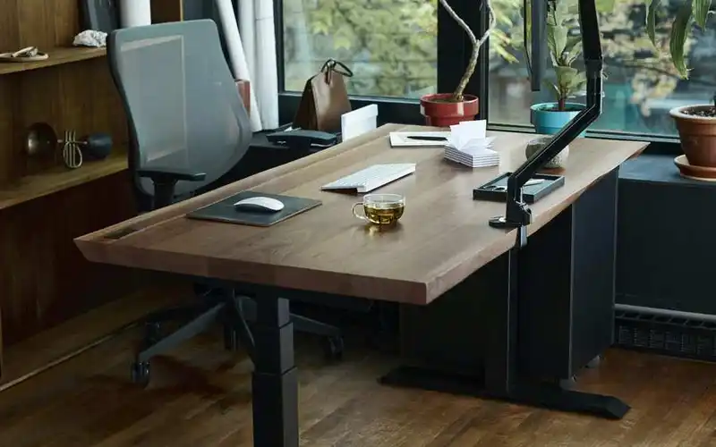

Tap targets
Buttons and links smaller than the 24 pixel minimum, which are hard to hit on a phone.
For Shopify agencies and store owners
Send us a store URL. We run an automated accessibility scan on the storefront and reply with a short list of what to change in the theme, ordered by how serious each issue is.
Request a free check How it works
Report within one business day. Automated scan, so it will not catch everything.


Buttons and links smaller than the 24 pixel minimum, which are hard to hit on a phone.
Text that is hard to read against its background.
Buttons or links placed inside other buttons or links, which confuses keyboards and screen readers.
Controls, images and form fields with no accessible name.
Heading order, landmarks and page language that assistive tech relies on.
Each finding is written so a developer can find it in the theme and change it.
Checks are run with the open-source axe engine against the live storefront.
Reply to an email or write to us with the link. Agencies can send a store from their client list.
An automated scan of the homepage, with more pages on request.
Plain language, ordered by severity, with the element and what to change. No jargon dump.

Check a client's store before launch or handoff, and have a list to put in the ticket.
Find out what in your theme is hard to use, without reading a scanner report.
Yes. The first check is free. If you want help making the fixes, ask us and we will talk through it.
No. Automated scans find only some problems, and this is not legal advice or a compliance certificate. It is a practical list of things to fix.
No. We scan the public storefront only.
Release Proof is a small team. Write to hello.releaseproof@gmail.com and a person replies.